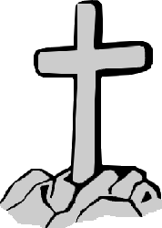

Спасение через Иисуса Христа
<<Бог в Лице Иисуса Христа пришел на Землю, родившись Человеком.
Это событие является смыслом всеми любимого праздника Рождества Христова. Его удивительное рождение, Его безгрешная жизнь, Его мучительная смерть, и Его славное воскресение подробно описаны в первых четырех книгах Нового Завета.
Смерть Иисуса Христа была особенной. Он был казнен как преступник распятием на деревянном кресте. Но за что? Ведь Он жил безгрешной жизнью? Более того, ведь Он же не просто человек, Он сам Бог, Сын Божий?! Да, но Он понес наказание не за свои преступления.
Он был распят на кресте за грехи всех людей.
Он добровольно из любви к нам взял нашу вину на Себя, чтобы спасти нас от того погибельного состояния, в котором мы оказались. Вот как об этом пишет апостол Павел в Библии:
Христос умер за грехи наши, по Писанию, и Он погребен был, и воскрес в третий день, по Писанию. (1Кор.15:3-4)Он отдал Себя Самого за грехи наши, чтобы избавить нас. (Гал.1:4)
Согласно тому, как предсказывалось в Писании, в Библии, Иисус Христос умер за наши грехи и потом воскрес. Это величайшее событие является смыслом праздника Пасхи, когда мы поздравляем друг друга замечательными словами: Христос воскрес! Воистину воскрес! И это действительно самое важное событие во всей истории человечества.
В одной книге описывается случай о том, как один английский офицер прогуливался со своими детьми в саду. Вдруг он услышал какой-то странный гул. Обернувшись, он увидел, что прямо на одного из его детей летит осиный рой. Бросайся на землю
, - закричал отец. Ребенок мгновенно упал. Отец быстро снял куртку и стал размахивать ею, чтобы привлечь внимание ос на себя. Он достиг своей цели. Осы изменили направление и, не трогая ребенка, набросились на отца. Он был зажален до смерти. Отец умер, чтобы спасти своего ребенка.
Эта история помогает представить то, что сделал Бог ради нас. Чтобы спасти нас, Он взял нашу вину на Себя, и то осуждение, которые мы заслужили, понес Он.
Читать дальше:
Как получить прощение грехов.